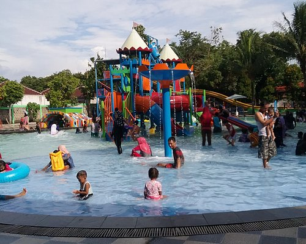
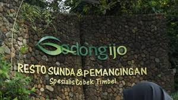

Tempat Wisata Kota Depok
1.Taman Wisata Pasir Putih
sumber:tripadvisor.com
Taman Wisata Pasir Putih merupakan Taman rekreasi
yang memiliki wahana air dan permainan anak-anak.
TEMPAT: JL.Garuda Raya No 1,RT.01/RW.07, Pasir Putih,
Kec. Sawangan, Kota Depok, Jawa Barat 16519
2.Godong Ijo
sumber:tribunnewswiki.com
Godong Ijo adalah Tempat wisata edukasi
yang menawarkan
berbagai aktivitas seperti kebun binatang mini,
kebun tanaman, dan kegiatan lainnya
TEMPAT: JL. JL.Raya Cinangka Raya No.KM 10 Kec.Bojongsari,Kota
Depok,jawa barat 16517
3.Taman Pemuda Pratama

sumber:orami.com
Taman Pemuda Paratama
adalah Sebuah taman
kota yang cocok
untuk rekreasi santai, olahraga, atau
sekadar berjalan-jalan
TEMPAT: JL. Tanah Baru,Kecamatan Beji,Kota Depok,Jawa Barat
16426